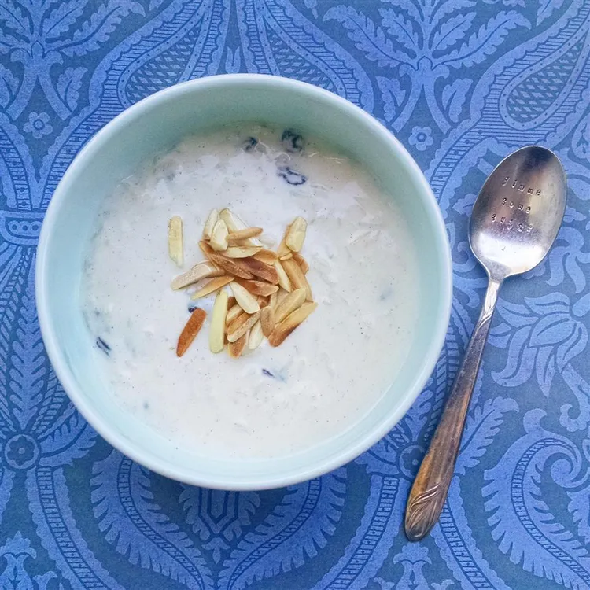

Kheer Pudding

Delicious warm or cold kheer with creamy base that feels like warmth of what you miss.
Ingredients:
- Milk
- Short grained rice
- Sugar
-
- Cinnamon
-
- Sliced Coconuts,dates
Steps of pudding like Kheer
- Bring coconut milk, milk, and sugar to a boil in a large saucepan over medium heat. Add rice, reduce the heat to low, and simmer until mixture thickens and rice is tender, about 20 minutes.
- Stir in raisins, cardamom, and rose water; cook for a few more minutes. Ladle into serving bowls and garnish with almonds and pistachios.